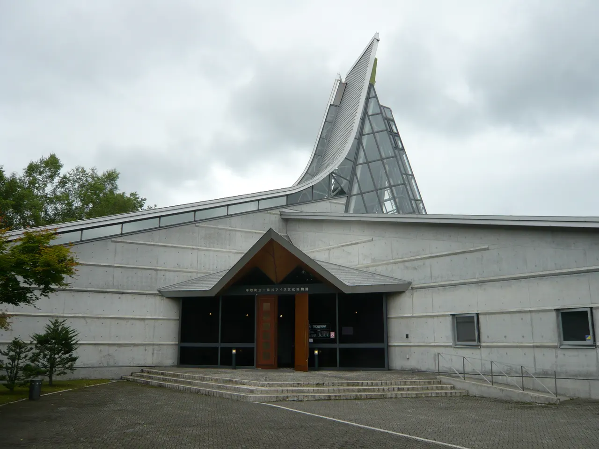
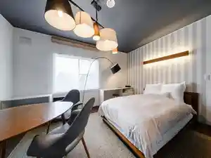
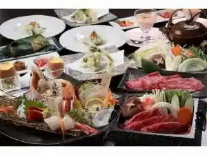
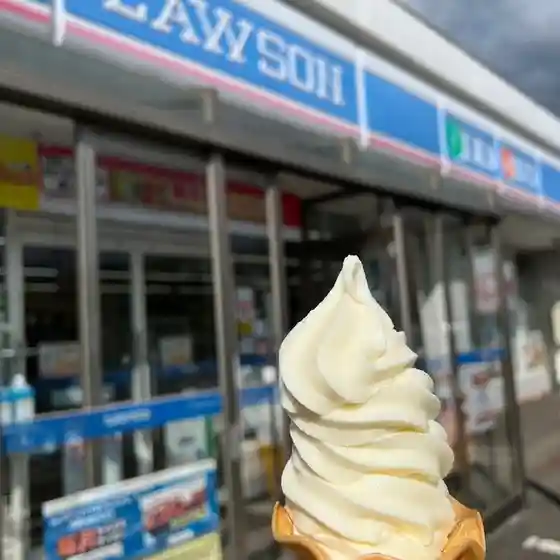
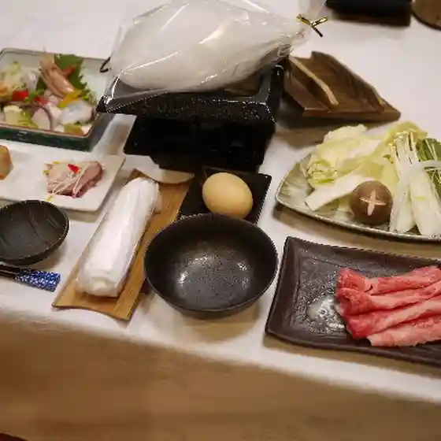
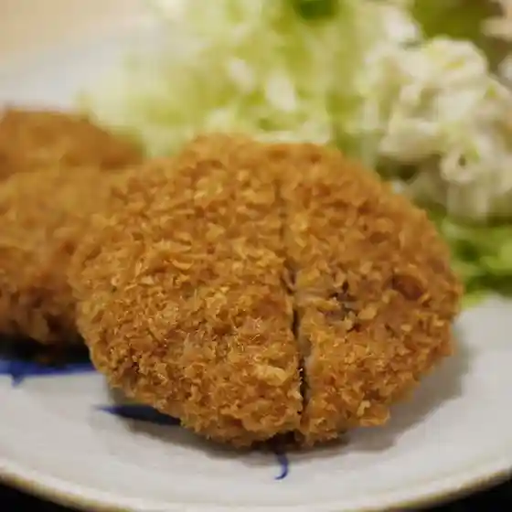
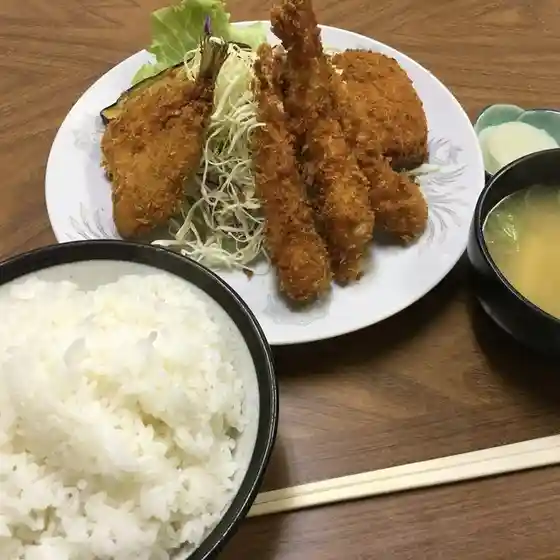
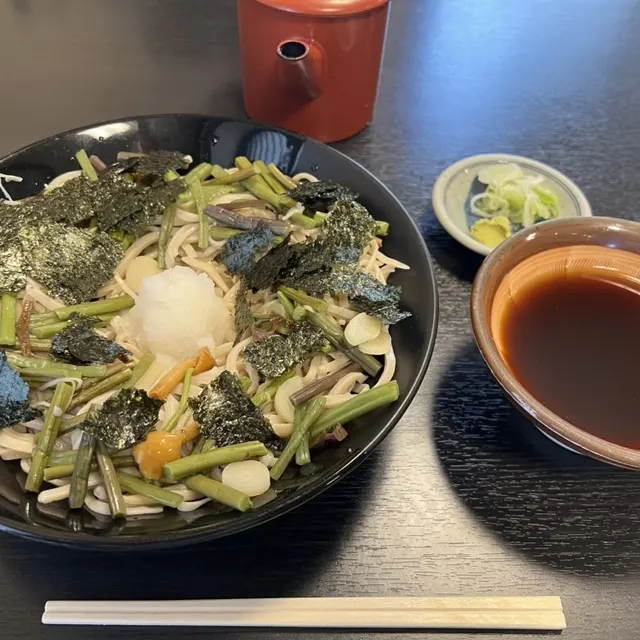
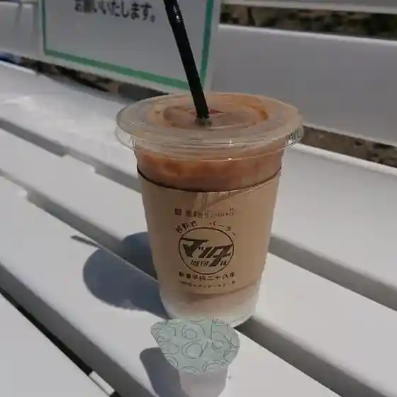

Biratori
Biratori · Hokkaido
Biratori
Highlighted on the Hokkaido map.

Stay
Tabist 駿 日高平取

Tabist Shun Hidaka Hiratori
びらとり温泉 ゆから

Biratori Onsen Yukara
Dining
民宿喜楽家

Minshuku Kiraku Ie
LAWSON 平取本町店

Lawson Hiratori Honchou Mise
ゆから

Yukara
民宿沙流川

Minshuku Saru Kawa
味処 いこい

Ajidokoro Ikoi
お食事の店 黒田

O Shokuji No Mise Kuroda
手打生そば 藤

Teuchi Naso Ba Fuji
マツダ珈琲

Matsuda Koohii
くろべこ
Kurobeko
じゃんけんぽん
Jankenpon
味道園
Aji Michi Sono
レストラン トマト
Resutoran Tomato
JAびらとり農産物直売所
Ja Biratori Nousanbutsu Chokubai Tokoro
はれのあさ
Harenoasa
モンブラン
Monburan
びらとりハム
Biratori Hamu
味の鳥天
Aji No Toriten
パスタと和洋食の店 コトナ
Pasuta To Wayou Shokuno Mise Kotona
お食事処 彩かえ
O Shokuji Tokoro Sai Kae
Cafe アリキキ
Cafe Arikiki
アレーズカフェ アン
Areezukafe An
ユーカラ
Yuukara
仁世宇園
Hitoshi Yo U Sono
うえの
Ueno